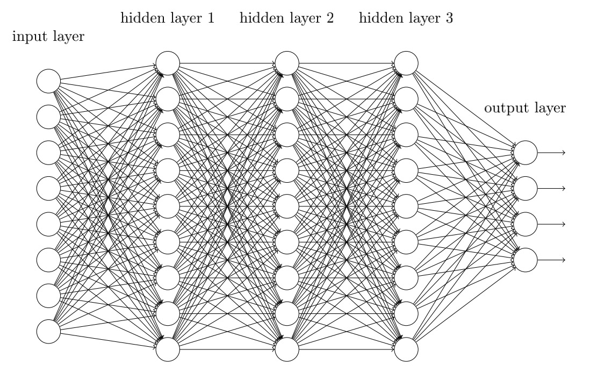
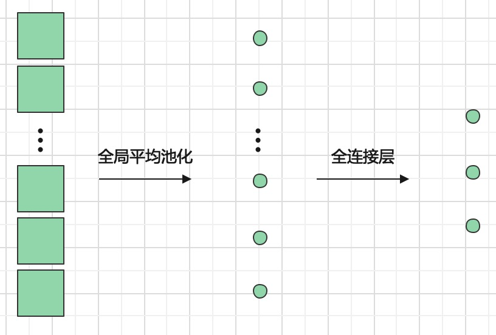

全连接层
全连接层（Fully Connected Layer），也称为密集连接层或全连接层，是神经网络中的一种常用层次结构。全连接层通常在卷积层或池化层后面使用，用于将特征图展开成一维向量，并将其输入到输出层中进行分类或回归等任务。
全连接层是其实是一个老朋友了，还记得我们在设计可以自学习的异或网络时定义的小网络吗？他只有三层，输入输出都是一维的。 那就是一个简单的全连接层。当然我们也可以将其尺寸和维度进行拓展，比如下图：

但这么复杂的网络肯定不会再让我们自己定义权重和偏置了，而是可以直接调用torch的函数
torch.nn.Linear(in_features, out_features, bias=True)
- in_features: 每个输入特征的尺寸
- out_features: 每个输出特征的尺寸
- bias:如果设置为 False，该层将不会学习加性偏差。默认值：True
注意这里说是 每个特征， 因为在输入时可能有多个样本一起输入。如此输入输出的shape定义如下
- 输入: : ＊表示任意数量的维度，包括None,
- 输入: : ＊表示任意数量的维度，包括None,
代码实现如下
m = nn.Linear(20, 30)
input = torch.randn(128, 20)
output = m(input)
print(output.size())
# torch.Size([128, 30])
需要解释的是128是指代样本个数，所以输出时候这个维度不会变化，但是第二微因为矩阵成会转换为输出通道数。
Important
全连接层的参数数量非常庞大，通常会占用神经网络总参数的大部分。所以一般使用时候会采用较少的全连接层,另外输出维度也不会特别大。
实现原理
为什么到这里才介绍实现原理呢？因为我觉得这其实算稍微拓展一点的内容，所以看不懂也没有关系，就放后面了。
全连接层实际上是利用如下公式对输入进行线性变换(linear transformation)
其中A就是可学习权重矩阵，尺寸为(out_features, in_features)。值初始化为均匀分布 。其中
b是可学习偏置，形状为(out_features)。值初始化为均匀分布 。其中
与卷积连接
在设计分类网络中，我们一般采用卷积，池化层等提取网络特征，然后再使用全连接层得到输出。 但前面说过卷积一般用于处理2维特征图，而全连接是处理一维的，那这中间采用什么连接呢？一般来说可以用全局池化层将二维通道转化为一维向量，然后在采用全连接层。
如下图所示

当然也可以将最后一维特征图展开变成一维，如原来最后一层特征图尺寸为(n, 2, 2)，可以将其展开为(n22, 1)的特征向量，但其缺点是会引入较大维度。